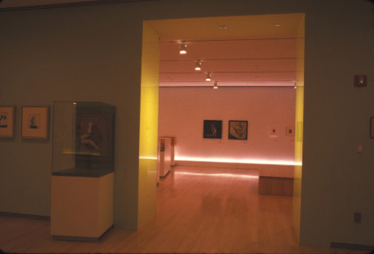

|  |
|
Fig 3: From this viewpoint, the visitor is standing
in Section 3, "Bellmer and Surrealism," looking into Section
2, "Bellmer in Nazi Germany." The florescent lights were built
into the sides of the entry walls.
|